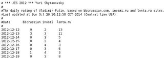
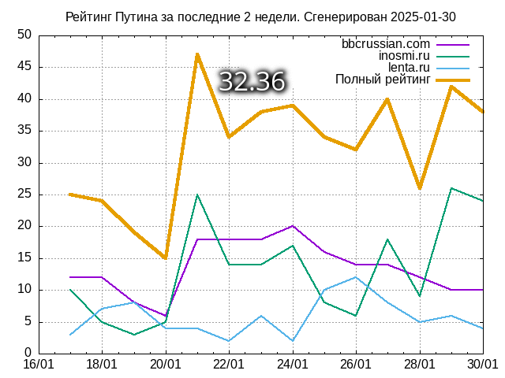
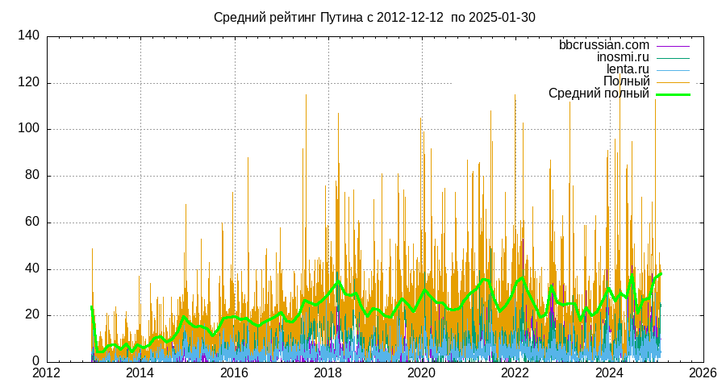
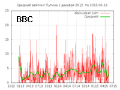
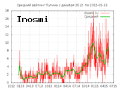

The Putinmeter of Yuri Shymanovsky
[Русский]
Here I'm bringing to your attention so called "Putinmeter" or "Putinomer".
This is an automatic system to calculate media rating of Vladimir Putin,
based on bbcrussian.com, inosmi.ru, lenta.ru. sites.
How does Putinmeter count the Putin's rating? That's very simple. He just count, how
many times word "Putin" appears on the main page of the site. It does not
matter, weither they say good or bad news. Everybody knows that black advertising
is still advertising. Then he calculates a full rating as a sum of three found
ones. The statistics has been collected since 12/12/2012 and stored in this
table:
The Rating Table

Following is graphical representation of the Putin's rating in the last 2 weeks.
The average two-weeks rating is shown as a number in the center of the
picture. Rating above 10 must be considered high.

The code to insert Putinmeter into your blog
Here is a rating since December 2012

Rating by sites
  
The Putinmeter has his own blog http://putinomer.blogspot.com/, and
sends weekly summary to USENET groups, like relcom.comp.binaries,
alt.binaries.osinga, alt.binaries.pipe and others.
Minor Putinmeter. Today's rating only

The code to use
(c) *** JES 2014 *** Yuri
Shymanovsky
as well as composer, explorer and necrodesigner
Back|Main